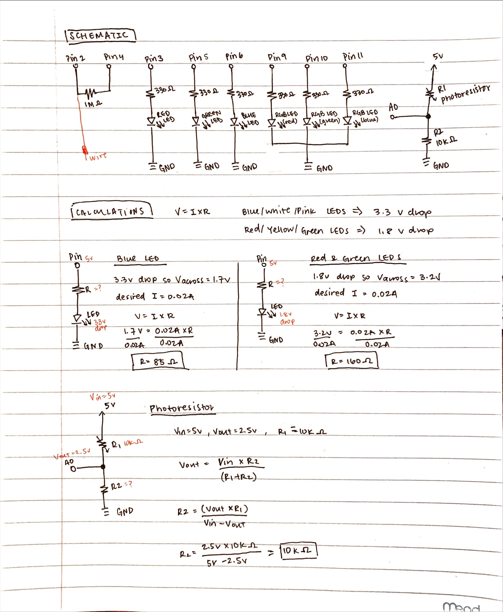
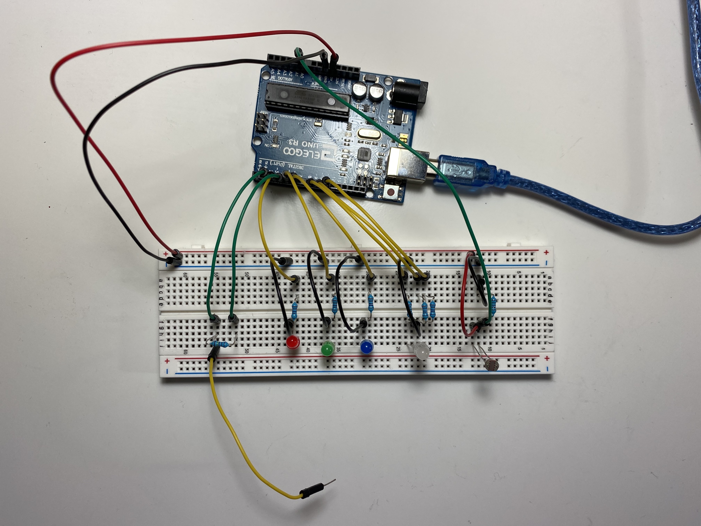
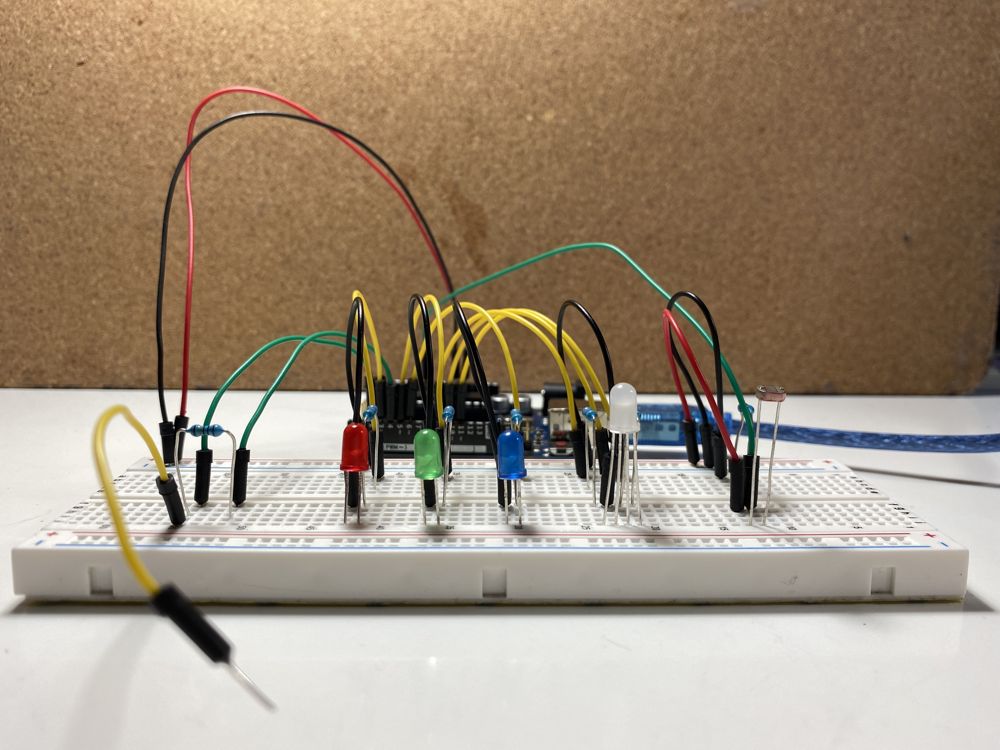

create a schematic for a circuit containing an input (ex: sensor, capacitive touch) and an output (ex: actuator, servo, LED) using a library (ex: remote control, capacitive touch, servo motor)
implement this circuit using a breadboard
write firmware in Arduino, writing a message to the serial port
the code must use:
an input part
an output part
at least one of the inputs or outputs should use a library
Here is a gif of my LED color selector circuit in action!
Building off of the LED color selector circuits that I had created for A2 and A3, I decided to adapt my previous color selector circuits to fade the
RGB LED to the chosen LED color 🔴 🟢 🔵 using capacitive touch 🤏 in the circuit.
Schematic
 Schematic and calculations
for my circuit.
Since I was using red, green, and blue LEDs for my circuit, I did two sets of calculations to determine what the appropriate
resistance to use for each LED: one for the red and green LEDs, and another set of calculations for the blue LED. For red, yellow,
and green LEDs, they all have 1.8V voltage drop, and for blue, pink, and white LEDs, they all have 3.3 voltage drop. The
desired current for all the LEDs I used was 20mA, or 0.02A (found based on the datasheets for the LEDs). When calculating the
appropriate resistance to be used in the circuit, I started with calculating the voltage across. For each of the LEDs, I decided to use 330
Ω resistors to be consistent.
Red and Green LEDs:
Knowing that the Arduino gives 5V, I calculated the voltage across as 3.2V (5V - 1.8V drop = 3.2V across). Using the known voltage across and
the desired current, I then used Ohm's Law with the equation V=IR to get a value R=160Ω for resistance. To ensure
that I did not overload the LEDs and cause them to burn out, I decided to round up and use a 330Ω resistor (shown in schematic
above calculations).
-- Blue LED: Knowing that the Arduino gives 5V, I calculated the voltage across as 1.7V
(5V - 3.3V drop = 1.7V across). Using the known voltage across and the desired current, I then used Ohm's Law with the equation
V=IR to get a value R=90Ω for resistance. To decrease the brightness of the LED, I decided to round up and use a
330Ω resistor (shown in schematic above calculations).
-- RGB LED: For the RGB LED, I used the calculations
above for each corresponding color (red, green, and blue) for the LED. I decided to use a 330Ω resistor for all three for
consistency with the other LEDs.
-- Photoresistor: For the photoresistor, I exposed the photoresistor to different intensity brightness to measure resistance. The measured
resistance I got from the multimeter was a range of around 1k-10kΩ, and I found that resistance decreased as brightness intensity increased. I found that when
the multimeter measured around 10kΩ resistance, I measured 2.5V, and 5V when the photoresistor was exposed to really intense luminosity. For calculating R2, I
used the equation R2=(Vout*R1)/(Vin-Vout) using the values Vin=5V, Vout=2.5V, R1=10kΩ, and I calculated R2 to be 10kΩ.
-- Capacitive Sensor: I didn't do any calculations for the resistor used with the capacitive sensor, but from reading through the documentation, increase
in resistor values means more sensitivity with the capacitive touch, but at a tradeoff of speed (increase in resistance increases sensitivity, but makes it slower). Here is a list of guidelines for resistor values and approximate sensitivity:
Use a 1 megohm resistor (or less maybe) for absolute touch to activate. *
With a 10 megohm resistor the sensor will start to respond 4-6 inches away.
With a 40 megohm resistor the sensor will start to respond 12-24 inches away
* I decided to use the 1 megohm resistor as I wanted to activate the capacitive sensor with absolute touch.
Circuit
For my circuit, to make the LED color chooser circuit, I used a red LED, green LED, blue LED, a RGB LED, potentiometer, and photoresistor.
 Top View of my Circuit
 Side View of my Circuit
Arduino Code
/* A4: Libraries
* Jocelyn Chen
* Monday 2.14.2022
*
* This program is a color selector circuit which input is taken using a photoresistor to
* choose a LED color to fade a RGB LED to the chosen color using a capacitive sensor.
*
*/
// include library for capacitive sensor#include <CapacitiveSensor.h>
// capacitive sensor with 1 megaohm resistor between pins 4 & 2, pin 2 is sensor pin, add wireCapacitiveSensor cs_4_2 = CapacitiveSensor(4,2);
/// SET PINS FOR LEDs and PHOTORESISTOR ///// pins for red, green, and blue LEDs (red = pin3, green = pin5, blue = pin6)const int leds_pins[] = {3, 5, 6};
// pins for the RGB LED ( red = pin9, green = pin10, blue = pin11)const int rgb_led_pin[] = {9, 10, 11};
// number of total LEDs that a user can choose a color from (red, green, or blue)const int num_leds = 3;
// pin used for photoresistor sensor (will be used for choosing a LED color: red, green or blue)const int sensor_pin = A0;
// the number LED chosen (corresponding to LED number in leds_pins[] and rgb_led_pin[] arrays)int led = 0;
/// SETUP FUNCTION ///// the setup function runs once when you press reset or power the boardvoidsetup() {
// initialize serial communication at 9600 bits per second:Serial.begin(9600);
// initialize pins for the red, green, blue, and RGB LEDs as outputsfor (int i = 0; i < num_leds; i++) {
// pins for red, green, and blue LEDspinMode(leds_pins[i], OUTPUT);
// pins for RGB LEDpinMode(rgb_led_pin[i], OUTPUT);
}
}
/// CHOOSE COLOR FUNCTION ///// function to choose LED color (red, green, or blue) based on the analog in value from the photoresistor// Parameter:// - int sensor_in: the analog in value read in from the photoresistorint choose_color(int sensor_in) {
// change the LED color based on the analog in value// if analog in value >= 600 -> red LED on// if analog in value < 600 and >= 350 -> green LED on// if analog in value < 350 -> blue LED onif (sensor_in >= 600) {
// turn red LED on (set pin to 255) and green and blue LEDs off (set pins to 0)analogWrite(leds_pins[0], 255);
analogWrite(leds_pins[1], 0);
analogWrite(leds_pins[2], 0);
// set LED number to 0
led = 0;
} else if (sensor_in < 600 & sensor_in >= 350) {
// turn green LED on (set pin to 255) and red and blue LEDs off (set pins to 0)analogWrite(leds_pins[0], 0);
analogWrite(leds_pins[1], 255);
analogWrite(leds_pins[2], 0);
// set LED number to 1
led = 1;
} else { // sensor_in < 300// turn blue LED on (set pin to 255) and red and green LEDs off (set pins to 0)analogWrite(leds_pins[0], 0);
analogWrite(leds_pins[1], 0);
analogWrite(leds_pins[2], 255);
// set LED number to 2
led = 2;
}
// return the LED numberreturn led;
}
/// FADE RGB FUNCTION ///// function to fade the RGB LED to the chosen LED color based on the capacitive sensor value// Parameters:// - int rgb_in: the capacitance value from the capacitive sensor// - int led_num: the chosen LED color// - int rgb_out: the constrained valuevoid fade_rgb(int rgb_in, int led_num, int rgb_out) {
// set color of the RGB LED based on the capacitive sensor reading// if the capacitive sensor reading is < 100, set the starting color and brightness of the RGB LED// if the capacitive sensor reading is >= 100, set the RGB LED to the given color and calibrated brightness if (rgb_in < 100) {
// set the starting color of the RGB LED, with red, green, and blue each at 10for (int i = 0; i < num_leds; i++) {
analogWrite(rgb_led_pin[i], 10);
}
} else { // rgb_in > 100// set the given color of the RGB LED to the given output valueanalogWrite(rgb_led_pin[led_num], rgb_out);
}
}
/// LOOP FUNCTION ///// the loop function runs over and over again forevervoidloop() {
// set sensor resolution to 30long total1 = cs_4_2.capacitiveSensor(30);
// wait 100 millisec (delay) to limit data to serial port
delay(100);
// read the analog in value of the photoresistor:int sensor_value = analogRead(sensor_pin);
// map and constrain the capacitive sensor reading to the range of the analog out to calibrate// read in a range 0 - 800 from the capacitive sensor// write out a range 0 - 255 (for the LED)int cs_value = map(total1, 0, 800, 0, 255);
// constrain the output to be only from 0 to 255int cs_constrained = constrain(cs_value, 0, 255);
// choose an LED color (red, green, or blue) based on the analog in reading from the photoresistorint chosen_led = choose_color(sensor_value);
// fade the RGB LED to the given color (using the chosen_led variable) and brightness// (using the capacitive sensor reading and its mapped constrained analog out value)
fade_rgb(cs_value, chosen_led, cs_constrained);
}
Above is a code snippet of my Arduino code. For my code, I initialized the pins as OUTPUTs with their corresponding colors, with Pin3 for the Red LED, Pin5
for the Green LED, and Pin6 for the Blue LED using an array [] and for-loop. For the RGB LED, I set them to pins 9-11 and intialized them as OUTPUTs. I used
analogRead() to read in the analog in values from the photoresistor (which I connected to the analog pin A0). From the analog in values that were read in,
I used them to choose an LED color based on which LED was turned on (If the analog in value was >= 600, the red LED would be on. If the analog in value was between 350 and 600, the green
LED would be on. If the analog in value was less than 350, the blue LED would be on). To fade the RGB LED to the chosen color, I used the capacitive sensor and an if-statement. I used the
if-statement to increase fade the RGB to the chosen color using map() and constrain() to calibrate the capacitive sensor input readings to a range of 0-255 to set a brightness of the RGB
LED using analogWrite().
View the arduino code
here!
Video of the choosing the LED color using the photoresistor, and fading the RGB LED to the chosen color using the capacitive sensor.